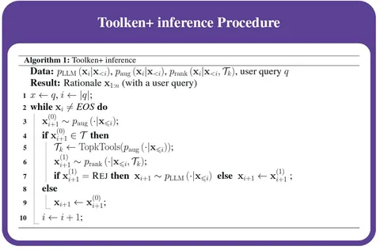
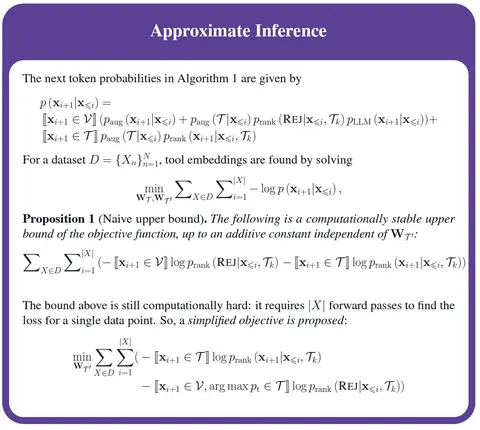
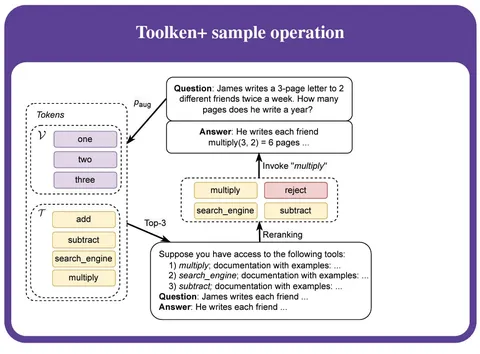
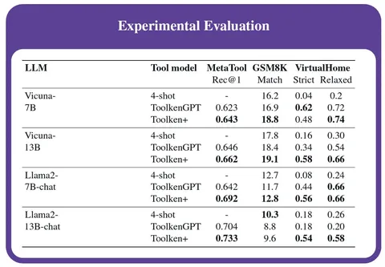
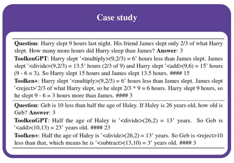

Сегодня разбираем две статьи. Первая описывает парадигму обучения инструментов ToolkenGPT. Вторая представляет развитие этой концепции, предложенное Константином Яковлевым, Сергеем Николенко и Андреем Бутом из Яндекса.
ToolkenGPT: как научить модель напрямую вызывать внешние функции
В первой работе исследователи предложили представить каждый внешний инструмент в виде токена — toolken (represents each tool as a token) — и выучивать его эмбеддинг. Модель обучается работать с такими токенами так же, как с обычными текстовыми.
В результате работу модели можно условно разделить на две стадии:
1) режим “reasoning” — генерация происходит, как обычно, с той лишь разницей, что добавленные toolken тоже рассматриваются в качестве вероятных токенов на каждом шаге генерации;
2) режим “tool” — когда следующим предсказанным токеном оказался toolken. В этом случае вызывается соответствующий инструмент в режиме “few-shot”. После того как вызов осуществляется внешним инструментом, модель возвращает ответ и переходит обратно в режим “reasoning”.
Авторы показали применимость подхода для математических операций на GSM8K-XL и FuncQA. Также рассмотрели задачи knowledge-based QA и генерации плана.
Toolken+: ранжирование инструментов и отказ от неподходящих функций
Концепция Toolken+ решает две проблемы ToolkenGPT. Во-первых, ранее модель не учитывала документацию по инструментам и часто выбирала неподходящий инструмент. Во-вторых, модель иногда стремилась использовать инструмент там, где это не требовалось.
Toolken+ добавляет два улучшения:
1) Переранжирование нескольких выбранных инструментов. Модель сначала предлагает k вариантов, потом повторно оценивает и выбирает оптимальный.
2) Опцию “reject” для отказа от вызова инструмента. Модель может явно указать, что сейчас не стоит применять никакой инструмент, если вероятность подходящего вызова невысока.
Эти изменения позволяют минимизировать как ошибки ложноположительных срабатываний при вызове инструментов, так и ошибки неправильной классификации инструментов для ToolkenGPT, что позволяет улучшить робастность модели.
Результаты
Исследователи проверяли Toolken+ на математическом бенчмарке GSM8K, на бенчмарках VirtualHome и MetaTool. Они показали, что добавление переранжирования и опции "reject" улучшает качество конечных ответов. При этом в MetaTool требуется только одна функция для заданного запроса, поэтому опция "reject" не нужна — таким образом, замер служит как аблейшн реранжирования гипотез.
Расскажите в комментариях, что думаете о подходах ToolkenGPT и Toolken+.
Разбор подготовил
Душный NLP
